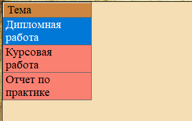
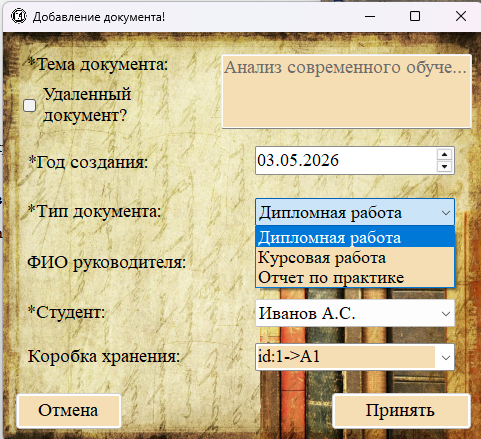
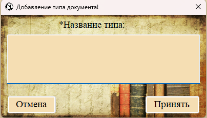
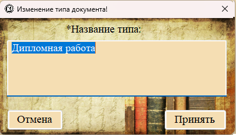
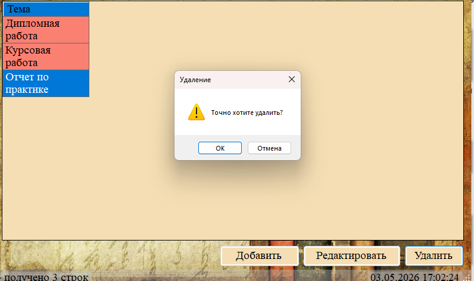

Раздел «Типы документов» (меню «Справочник → Типы документов») представляет собой справочник, используемый для классификации документов во всех остальных разделах программы.

Рис. 1. Раздел «Типы документов» — список всех типов
Отображаемые поля
Таблица содержит всего одну информационную колонку:
— Тема — название типа документа (уникальное значение).
Примеры типов документов

В справочнике могут быть, например, такие значения:
— Курсовая работа
— Дипломная работа (ВКР)
— Отчёт по практике
— Экзамен
— Зачёт
— Лекция
Где используется справочник типов документов

Рис. 2. Выпадающий список типов документов в форме добавления документа
Справочник типов документов используется в следующих местах программы:
— Форма добавления/редактирования документа (поле «Тип документа»).
— Форма добавления/редактирования коробки (поле «Целевой тип»).
— Формирование описи дипломных работ (поиск документов с типом «Дипломная работа»).
Добавление нового типа документа

Рис. 3. Форма добавления нового типа документа
Поля формы:
— Название типа (обязательное) — многострочное текстовое поле для ввода названия (например, «Магистерская диссертация»).
— Кнопки «Принять» и «Отмена».
Редактирование типа документа

Рис. 4. Форма редактирования типа документа (заголовок «Изменение типа документа»)
Важно: При изменении названия типа документа оно автоматически обновится:
— Во всех документах, у которых указан этот тип.
— Во всех коробках, у которых указан этот тип.
(Благодаря каскадному обновлению внешнего ключа ON UPDATE CASCADE в базе данных.)
Удаление типа документа
Внимание! При удалении типа документа:
— Все документы, имеющие этот тип, будут удалены каскадно (из-за ON DELETE CASCADE).
— Все коробки, имеющие этот тип, будут удалены каскадно.

Рис. 5. Критическое предупреждение при удалении используемого типа
Поэтому перед удалением типа убедитесь, что:
— Нет документов с этим типом (или они уже перемещены в «Удалённые»).
— Нет коробок с этим типом.
Рекомендация
Вместо удаления типа